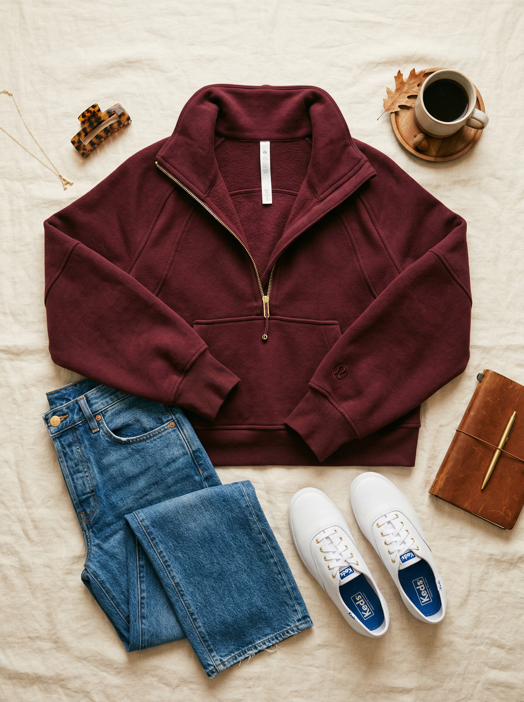
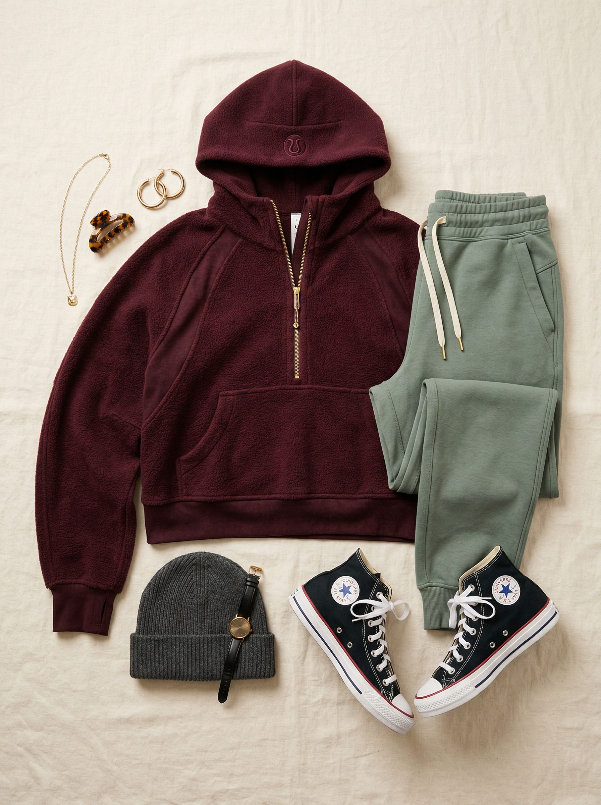
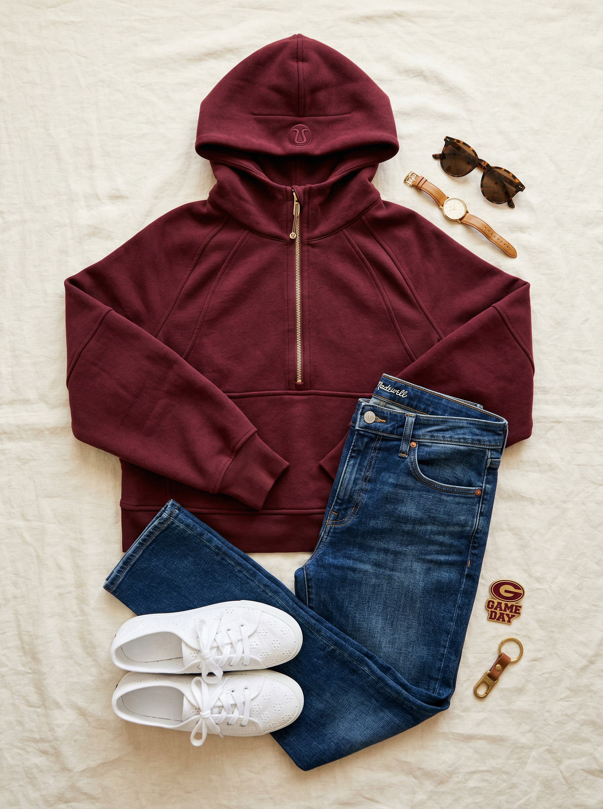

Scuba Oversized Half-Zip Hoodie
The most iconic casual hoodie on the market right now. Scuba fabric is thick, plush, and cozy in a way that still looks elevated — not sloppy. The gold hardware on the half-zip adds a premium finishing detail. Burgundy Bay is a warm, rich wine tone that's an entirely different energy from the gray and baby blue Scubas you already own.
Shop NowWhy This Pick
You already have a gray Lululemon cropped half-zip and a baby blue full-zip — you know you love this brand for casual layers. This Burgundy Bay adds a WARM tone to your hoodie lineup, filling a gap. The gold hardware is elevated. Rich burgundy is perfect for fall soccer games, winter errands, and Texas "cold snaps" (aka anything below 60°F). Saturday soccer game sideline essential.
3 Ways to Wear It
Styled with pieces already in your closet


